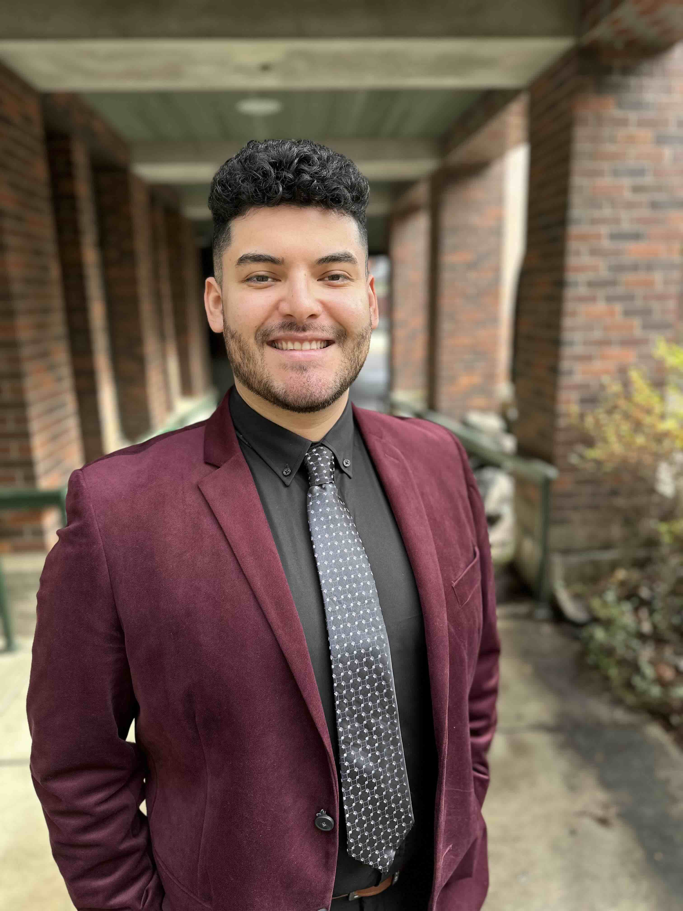

I am a junior at the University of Oregon majoring in Music. I have a passion for learning and performing. I have decades of experience playing my instrument and performing for people, and I have recently found my passion for teaching. I look forward to sharing my knowledge and experience with others and helping them grow as musicians.
University of Oregon, Bachelor of Science in General Music 2027
I have been playing the trumpet for 21 years and have been teaching for a combined 5 years. I have taught all types of students, ranging from beginners to advanced players. I have experience teaching both private lessons and group lessons, and I am comfortable working with students of all ages and backgrounds. I have a strong understanding of music theory and technique, and I am able to tailor my teaching approach to meet the individual needs of each student.